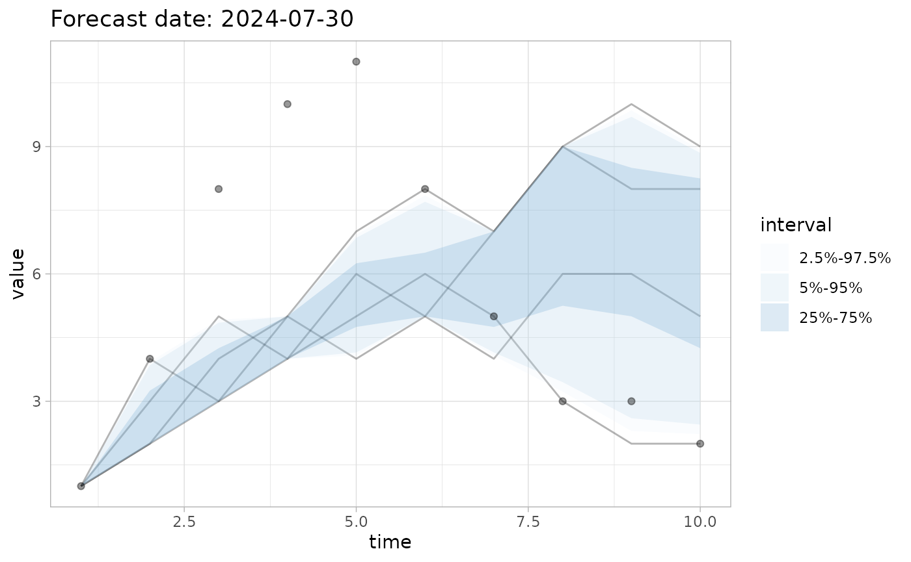

Evaluate time series forecasts with casteval
casteval.RmdOverview
casteval is an R package that helps you automate the evaluation of time series forecasts. It provides functionality for formatting, processing, scoring, and visualizing forecasts.
A typical workflow using casteval is:
-
Create a forecast
object by inputting a forecast and its metadata into
create_forecast() -
Score the forecast
using
score(), which accepts forecast object(s), corresponding observations, and a particular scoring function -
Visualize the
forecast using
plot_forecast()with a scored forecast and observations
This vignette guides you through this process.
Create a forecast object
In order to create a forecast object, a forecast must first be cast in one of the accepted formats, namely as a data frame or as a list.
Forecast input as data frames
Forecast data frames must contain:
- a
timecolumn, which can contain either numbers, dates, or date-times - forecast data, which can be passed as raw or summarized.
Raw forecast data are the individual realizations of a model. Summarized forecast data describes an ensemble of realizations by quantiles computed for each time point.
Raw forecast data
Raw forecast data must be passed in a column named val.
A sim column may be provided optionally to identify
different realizations (enables some scoring and plotting features).
# raw forecast over with numeric times, without simulation numbers
data.frame(
time=rep(1:5,each=3),
val=c(
100, 110, 120, 130, 140,
101, 111, 121, 131, 141,
102, 112, 122, 132, 142
)
)
#> time val
#> 1 1 100
#> 2 1 110
#> 3 1 120
#> 4 2 130
#> 5 2 140
#> 6 2 101
#> 7 3 111
#> 8 3 121
#> 9 3 131
#> 10 4 141
#> 11 4 102
#> 12 4 112
#> 13 5 122
#> 14 5 132
#> 15 5 142
# raw forecast data with dates, with simulation numbers
data.frame(
sim=rep(1:3,each=5),
time=lubridate::as_date(rep(1:5,3)),
val=c(
100, 110, 120, 130, 140,
101, 111, 121, 131, 141,
102, 112, 122, 132, 142
)
)
#> sim time val
#> 1 1 1970-01-02 100
#> 2 1 1970-01-03 110
#> 3 1 1970-01-04 120
#> 4 1 1970-01-05 130
#> 5 1 1970-01-06 140
#> 6 2 1970-01-02 101
#> 7 2 1970-01-03 111
#> 8 2 1970-01-04 121
#> 9 2 1970-01-05 131
#> 10 2 1970-01-06 141
#> 11 3 1970-01-02 102
#> 12 3 1970-01-03 112
#> 13 3 1970-01-04 122
#> 14 3 1970-01-05 132
#> 15 3 1970-01-06 142Summarized forecast data
Summarized forecast data may be stored in the following columns:
- Quantile columns must start with
val_qfollowed by a number from 0 to 100, e.g.,val_50would be the 50th quantile, i.e., the median - The mean column must be named
val_mean
Note that summarized data never contains a sim
column.
# summarized forecast data with the 25th, 50th, and 75th percentiles
data.frame(
time=lubridate::as_datetime(1:5),
val_q25=c(100,105,103,104,105),
val_q50=c(201, 210, 205, 201, 200),
val_q75=c(304, 305, 303, 303, 302)
)
#> time val_q25 val_q50 val_q75
#> 1 1970-01-01 00:00:01 100 201 304
#> 2 1970-01-01 00:00:02 105 210 305
#> 3 1970-01-01 00:00:03 103 205 303
#> 4 1970-01-01 00:00:04 104 201 303
#> 5 1970-01-01 00:00:05 105 200 302
# summarized forecast data with the mean, and the 2.5th and 97.5th percentiles
data.frame(
time=1:5,
val_q2.5=c(100,103,104,105,102),
val_mean=c(150,155,160,155,154),
val_97.5=c(200,200,2204,205,206)
)
#> time val_q2.5 val_mean val_97.5
#> 1 1 100 150 200
#> 2 2 103 155 200
#> 3 3 104 160 2204
#> 4 4 105 155 205
#> 5 5 102 154 206All forecast data columns (val, val_*) as
well as the sim column must be numeric.
Forecast input as lists
Forecast data frames are straightforward representations forecasts,
though they are innefficient for raw forecast data as the
time column gets repeated for each realization. If you have
particularly long forecasts and/or many realizations, forecast data
frames can quickly grow large, which can be slow to work with. Instead,
you may wish to represent your forecast as a list.
casteval accepts raw forecast data as a named list with the following entries:
-
time: a single vector of times as numbers, dates, or date-times -
vals: a list of numeric vectors containing the forecasted values, one per realization, where each vector is the same length astime
Since the individual realizations can be inferred from this casting,
there is no need to provide additional information to identify
individual realizations (as we did with the sim column above) in order to enable related
downstream features.
create_forecast()
Forecast objects are created with
create_forecast(). Its first argument is dat,
which is the forecast data in one of the formats described above.
create_forecast() accepts forecast metadata as
additional, optional arguments:
-
name: a label for the forecast. Plotting functions will usenameto title the plots they produce. -
forecast_time: the time at which the forecast period begins indat1. Theforecast_timeformat must match that of the times in thetimeentry ofdat, and can be used in scoring functions to compute scores only after times relative toforecast_time.
# forecast data with 4 time points and an ensemble of 3 simulations
dat1 <- list(
time=1:4,
vals=list(
c(100, 102, 110, 108),
c(200, 195, 197, 196),
c(300, 301, 300, 302)
)
)
fc1 <- create_forecast(dat1, name="forecast 1", forecast_time=3)
# the same data but formatted as a forecast data frame
dat2 <- data.frame(
time=rep(1:4, each=3),
sim=rep(1:3, times=4),
val=c(100, 200, 300, 102, 195, 301, 110, 197, 300, 108, 196, 302)
)
fc2 <- create_forecast(dat2, name="forecast 2", forecast_time=3)
print(fc1)
#> $name
#> [1] "forecast 1"
#>
#> $forecast_time
#> [1] 3
#>
#> $data
#> time sim val
#> 1 1 1 100
#> 2 2 1 102
#> 3 3 1 110
#> 4 4 1 108
#> 5 1 2 200
#> 6 2 2 195
#> 7 3 2 197
#> 8 4 2 196
#> 9 1 3 300
#> 10 2 3 301
#> 11 3 3 300
#> 12 4 3 302
# aside from the order of rows, the resulting forecast data frames are identical
waldo::compare(dplyr::arrange(fc1$data, time), fc2$data)
#> ✔ No differences
# mean-and-quantiles forecast data
dat3 <- data.frame(
time=1:5,
val_q2.5=c(100,103,104,105,102),
val_mean=c(150,155,160,155,154),
val_q97.5=c(200,200,2204,205,206)
)
# note how we omit `forecast_time`
fc3 <- create_forecast(
dat3,
name="forecast 3"
)
print(fc3)
#> $name
#> [1] "forecast 3"
#>
#> $forecast_time
#> NULL
#>
#> $data
#> time val_q2.5 val_mean val_q97.5
#> 1 1 100 150 200
#> 2 2 103 155 200
#> 3 3 104 160 2204
#> 4 4 105 155 205
#> 5 5 102 154 206create_forecast() returns a forecast object, which is a
list with the following fields:
-
data: a forecast data frame -
name: the name of the forecast, if provided -
forecast_time: when the forecast was made, if provided
# a forecast object with no optional metadata
list(
data=data.frame(
time=1:5,
val=6:10
),
name=NULL,
forecast_time=NULL
)
#> $data
#> time val
#> 1 1 6
#> 2 2 7
#> 3 3 8
#> 4 4 9
#> 5 5 10
#>
#> $name
#> NULL
#>
#> $forecast_time
#> NULL
# a forecast object with metadata
list(
data=data.frame(
time=lubridate::as_date(1:5),
val=6:10
),
name="A forecast",
forecast_time=lubridate::as_date(3)
)
#> $data
#> time val
#> 1 1970-01-02 6
#> 2 1970-01-03 7
#> 3 1970-01-04 8
#> 4 1970-01-05 9
#> 5 1970-01-06 10
#>
#> $name
#> [1] "A forecast"
#>
#> $forecast_time
#> [1] "1970-01-04"This list could be created by hand, without the help of
create_forecast(), but we recommend the latter approach as
create_forecast() validates its inputs to avoid issues
downstream. For example, it checks that:
-
forecast_time’s type is consistent withdata - quantile values are logically possible (e.g., median values can’t be smaller than the 25th quantiles)
- there are no conflicting rows (e.g., there can’t be two rows with the same time reporting different means)
Score a forecast
Forecasts are scored against observations, which must be passed to casteval in a specific format.
Observations data frames
Observations are passed to casteval in a data frame
with a time column and a val_obs column.
Similar to forecast data frames,
time may be either numeric, dates, or date-times.
val_obs must be numeric.
# An observations data frame
data.frame(
time=1:5,
val_obs=c(50,60,55,57,59)
)
#> time val_obs
#> 1 1 50
#> 2 2 60
#> 3 3 55
#> 4 4 57
#> 5 5 59Scoring functions
We score a forecast using score(), which has the
following parameters:
-
fcstsis either a forecast object or a list of forecast objects -
obsis an observations data frame -
funis a scoring function -
...are additional parameters which will be passed tofun
Scoring functions which can be passed to score()
include:
-
accuracy(), which calculates the success rate of a forecast’s quantile range predictions -
crps(), which calculates the Continuous Ranked Probability Score (CRPS) of a forecast -
log_score(), which calculates the (positive) logarithmic score of a forecast -
bias(), which calculates how much a forecast overpredicts/underpredicts values
score() scores every forecast passed to it against
obs, and returns a score for each one.2
Below are examples of scoring. For a detailed explanation of how scoring works, see the scoring vignette
Visualize forecast evaluation
casteval provides plotting functions which allow you
to visualize your forecasts, observations, and sometimes scores. Several
modular functions (plot_ensemble(),
plot_observations(), etc.) implement individual plotting
functionality, while the more user-friendly plot_forecast()
combines them all. We describe these functions below.
Plot a forecast
plot_forecast() plots a forecast and optionally overlays
observations and quantile intervals, scores the forecast, and
color-codes the observations based on score.
For raw forecast data, the quant_intervals parameter is
like the quant_pairs parameter in accuracy(),
and it is used to draw quantile intervals on the plot.3
If val_q50 is present in the forecast data, then the
median will be plotted. Similarly, if val_mean is present,
the mean will be plotted.
# Create a forecast
fc <- create_forecast(list(
time=1:10,
vals=list(
c(1,2,3,5,4,5,4,6,6,5),
c(1,3,5,4,6,5,7,9,8,8),
c(1,4,3,4,5,6,5,3,2,2),
c(1,2,4,5,7,8,7,9,10,9)
)
),
name = "Forecast date: 2024-07-30"
)
# Plot it
plot_forecast(fc)
# Plot it and display 3 quantile intervals
plot_forecast(fc, quant_intervals=list(c(25,75), c(2.5,97.5), c(5,95)))For summarized forecast data, if val_q50 is present in
the forecast data, then the median will be plotted. Similarly, if
val_mean is present, the mean will be plotted.
# Create a forecast with mean and median data
fc2 <- create_forecast(data.frame(
time=1:5,
val_mean=6:10,
val_q50=c(5.5,6,7.5,9,10)
))
# Plot it
plot_forecast(fc2)Plot observations with scores
If plot_forecast() is given observations and a scoring
function, it can additionally compute scores internally. Just pass a
scoring function to the score argument and
plot_forecast() will run
score(fcst, obs, summarize=FALSE) in order to plot the
forecast with observations colour-coded with the scores.
# Create some observations
obs <- data.frame(time=1:10, val_obs=c(1,4,8,10,11,8,5,3,3,2))
# Plot them over the forecast and its quantile intervals
plot_forecast(fc, obs=obs, quant_intervals=list(c(25,75), c(2.5,97.5), c(5,95)))
# Colour code points using `log_score()`
# `plot_forecast()` automatically passes `summarize=FALSE` to
# scoring functions in order to obtain the score for each day
plot_forecast(fc, obs=obs, score=log_score, quant_intervals = c(2.5, 97.5))You can pass additional arguments to score through the
ellipsis parameter in plot_forecast(). For example, you can
specify quantile pairs to accuracy() using this method.
# Identify the observations inside the 5%-95% quantile interval
quant <- c(5,95)
pp <- plot_forecast(fc, obs=obs, quant_intervals=list(c(25,75), c(2.5,97.5), c(5,95)), score=accuracy, quant_pairs=quant)
#> Scoring accuracy using quantile pairs c(5, 95)
pp
The invert_scale parameter allows you to invert the
color scale for observations. For example, for Continuous Ranked
Probability Score, a lower score is better.
# don't invert the scale (default behaviour)
plot_forecast(fc, obs, score=crps, invert_scale=FALSE)
# invert the scale
plot_forecast(fc, obs, score=crps, invert_scale=TRUE)Customize the output
Since plot_forecast() returns a
ggplot2::ggplot object, you can further customize the plot
to suit your application:
(pp
+ ggplot2::labs(
x = "Days from forecast",
y = "Hospital admissions",
colour = glue::glue("Observation predicted\nin {quant[1]}%-{quant[2]}% interval?"),
fill = "Quantile interval"
)
+ ggplot2::scale_colour_discrete(labels=c(`FALSE`="No", `TRUE`="Yes"))
+ ggplot2::theme_classic(base_size=14)
)Atomic plotting functions
Behind the scenes, plot_forecast() weaves together the
outputs of several helper functions to plot the different aspects of a
forecast. If you want further control over the visualization process,
you can use these functions directly. They are as follows:
-
plot_ensemble()4 plots an ensemble of forecast realizations5 -
plot_observations()plots a set of observations. If those observations contain ascorecolumn, then the scores will be used to colour-code the observations -
plot_quantiles()plots the specified quantiles of a forecast (quantiles can also be inferred from the forecast’s data columns). -
plot_mean()plots the mean of the forecast data -
plot_quant_intervals()usesggplot2::geom_ribbon()to plot bands of quantile intervals -
plot_obs_score()is a wrapper forplot_observations()which allows you to pass a scoring function, scoring parameters, and a forecast to be scored
All these functions consume a ggplot2::ggplot object as
their first parameter, and return a ggplot2::ggplot object
as well. This makes it possible to compose these functions in any order
using a pipe to produce the plot you want.
(plot_ensemble(fcst = fc)
|> plot_quant_intervals(fc, c(25,75))
|> plot_mean(fc)
|> plot_obs_score(fc, obs, score=accuracy, quant_pairs=c(25,75))
)
#> Scoring accuracy using quantile pairs c(25, 75)